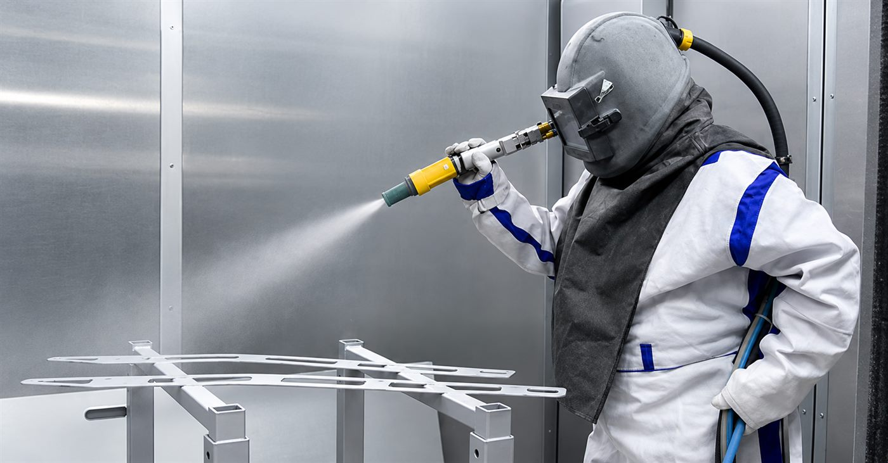
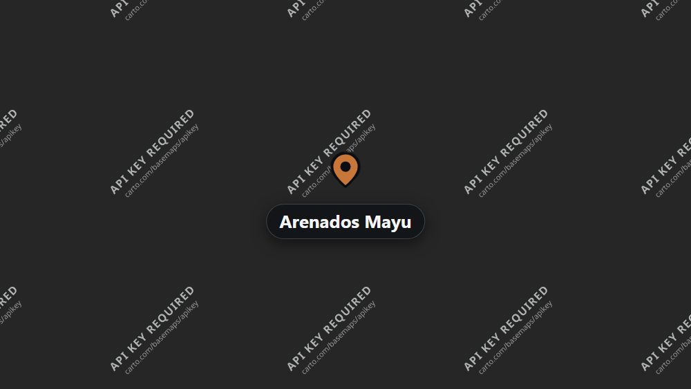
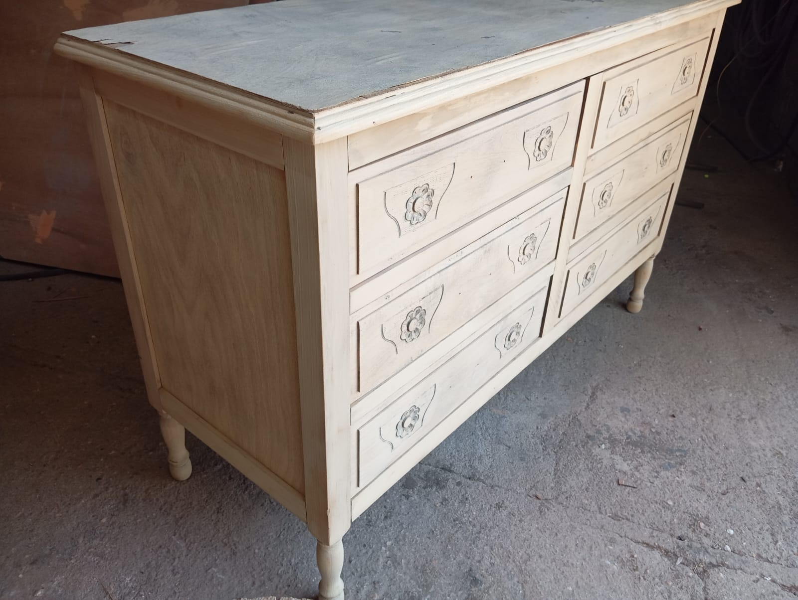
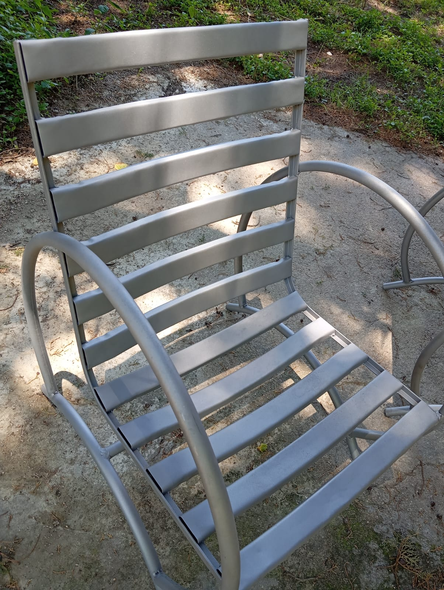
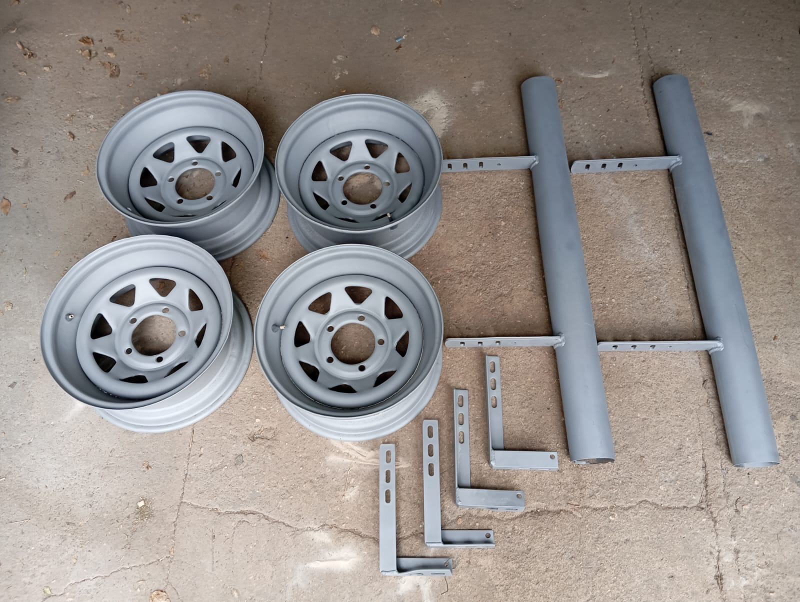
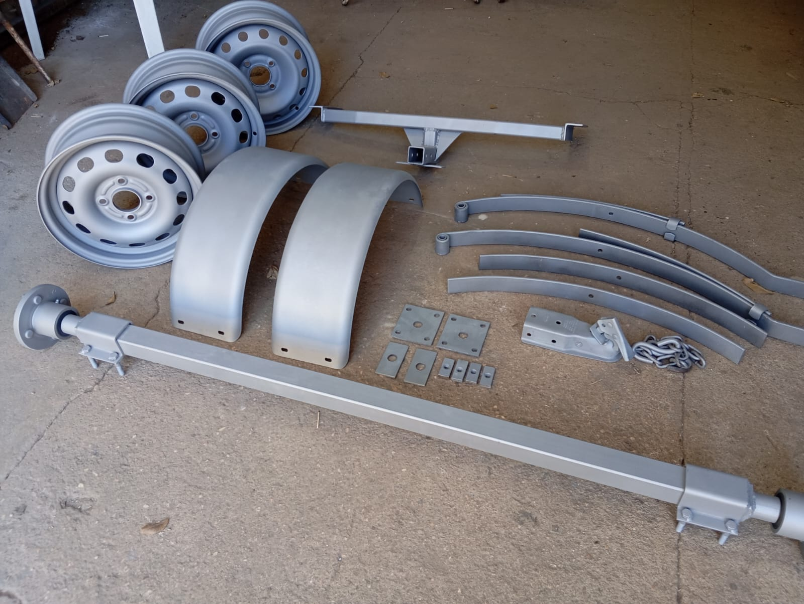

Preparación para pintura
No solo limpiamos: dejamos la superficie con la rugosidad justa para que la pintura, el epoxi o el barniz adhieran perfecto.
Desoxidamos y dejamos la rugosidad exacta para que la pintura, el epoxi o el barniz agarren bien. Recibimos y entregamos en Forrajeria El Lucero, o hacemos arenado a domicilio en las localidades cercanas.


Cómo llegar Forrajeria El Lucero · Comechingones, X5153Mirá cómo quedan las piezas después de pasarlas por nuestro arenado.
Traé tu pieza al taller o coordinamos la visita. El precio depende del producto, te lo pasamos por WhatsApp.
No solo limpiamos: dejamos la superficie con la rugosidad justa para que la pintura, el epoxi o el barniz adhieran perfecto.
¿Tenés una reja, un portón o una estructura grande que no podés mover? Vamos con el equipo al lugar. Consultanos por zona.
Eliminamos óxido, pintura vieja y suciedad incrustada sin dañar la pieza. Recuperamos piezas que parecían perdidas.
Elegí el tipo de trabajo y consultanos. Como cada pieza es distinta, el precio depende del producto que traigas: te pasamos el costo exacto por WhatsApp.
Algunas piezas que ya pasaron por nuestro taller.




Lo que más nos consultan
Es un proceso que lanza arena (o abrasivo) a alta presión sobre una superficie para limpiarla, desoxidarla y dejarla lista para pintar o restaurar. Elimina óxido, pintura vieja y suciedad incrustada.
Depende del producto: el precio se calcula según el tamaño, el material y el estado de la pieza. Mandanos una foto por WhatsApp y te pasamos el costo exacto y el tiempo de trabajo.
Depende del tamaño. Las piezas chicas las dejás en el taller; las estructuras grandes que no se pueden mover (rejas, portones, cubiertas) las arenamos a domicilio: vamos nosotros con el equipo. En los dos casos la entrega se coordina por WhatsApp según el trabajo: cuando traés la pieza te decimos cuánto demora y cuándo podés pasar a buscarla.
Recibimos y entregamos en Forrajeria El Lucero, en Comechingones (X5153), zona Mayu Sumaj, Córdoba. Traés la pieza, la arenamos y te avisamos por WhatsApp cuándo podés pasar a buscarla. Todo se coordina por ese mismo chat.
Además del punto de retiro, vamos a las localidades de los alrededores de Mayu Sumaj. Si la pieza es grande o no se puede mover, escribinos contándonos dónde es y coordinamos la visita con el equipo móvil.